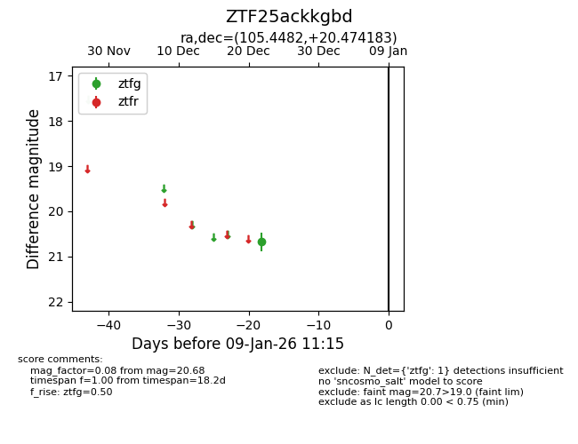
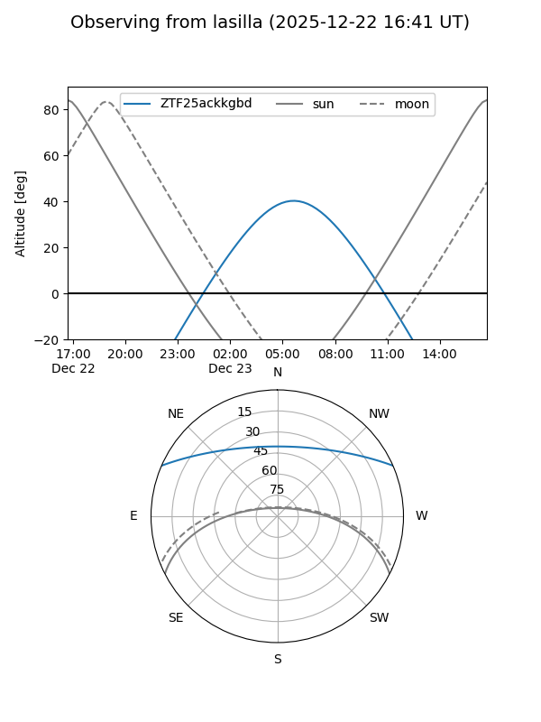
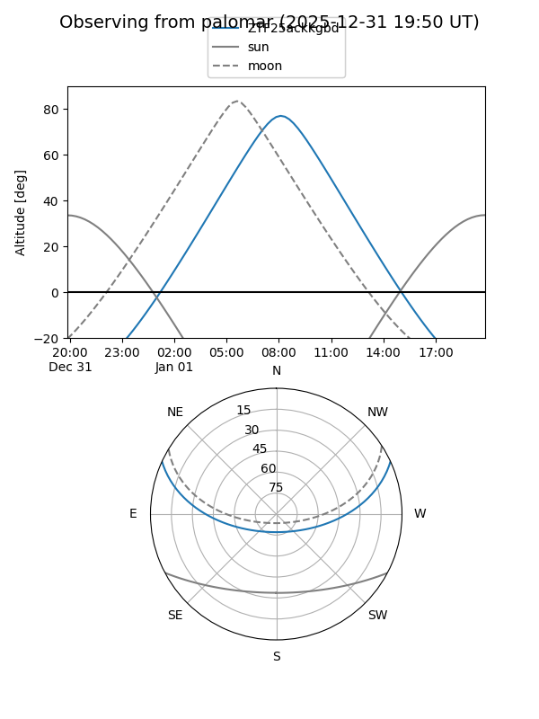

ZTF25ackkgbd
Target ZTF25ackkgbd at 2026-01-09 12:49
Aliases and brokers:
FINK: link
Lasair: link
ALeRCE: link
alt names
ZTF25ackkgbd (ztf,fink_ztf)
Coordinates:
equatorial (ra, dec) = 105.4482,+20.47418
equatorial (HMS+DMS) = 07:01:47.56,+20:28:27.06
galactic (l, b) = (195.6030,+11.37060)
Flags:
Photometry:
last ztfg=20.68
1 ztfg detections
Lightcurve

Visibility


Additional plots